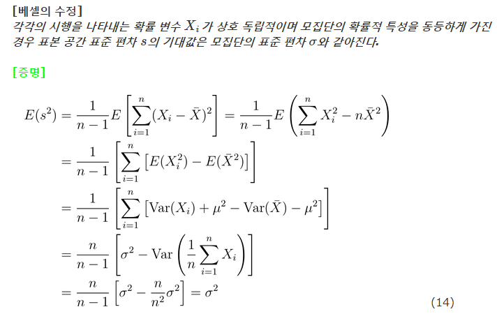
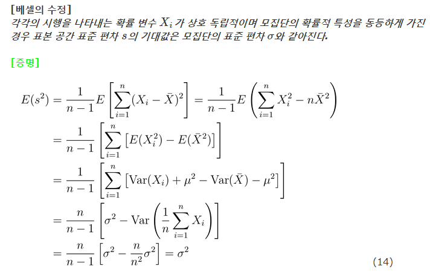

왜 n 이 아니라 n-1 인가?
1/20/2016
이십년도 지난 일이지만 내가 학교에 입학할 때는 수학과에 들어갔다. 문제는 입대하여 휴학한 동안 계산 통계학과와 과 통합이 되어 버렸다는 것.
그러다 보니 졸업장에는 입학했을 때 소속인 수학과로 표시되어있지만 통합 후 입학한 학생들과 같이 커리큘럼을 진행해야된다며 난데없이 전산학과 통계학 전공을 들어야만 했다.
들어올 때는 분명히 연필과 종이만 가지고 졸업이 가능했는데 말년에 유격이라니 생각지도 않은 수업을 그것도 전공으로 들어야 하다니 라며 입이 댓발은 나왔던 것이 생각난다.
그러다 보니 졸업장에는 입학했을 때 소속인 수학과로 표시되어있지만 통합 후 입학한 학생들과 같이 커리큘럼을 진행해야된다며 난데없이 전산학과 통계학 전공을 들어야만 했다.
들어올 때는 분명히 연필과 종이만 가지고 졸업이 가능했는데 말년에 유격이라니 생각지도 않은 수업을 그것도 전공으로 들어야 하다니 라며 입이 댓발은 나왔던 것이 생각난다.
계산 통계학과는 원래 학생을 뽑을 때 부터 통계학 전공과 전산학 전공으로 나누어졌던 것으로 기억한다. ㅆㅂ 그래서 전공도 각각 두 종류 모두 들어야 했지 그렇게 억지 춘향으로 들은 전산학 과목이 "프로그래밍 및 실습" 이었다. 이십여년이 지난 지금까지 그때 쓴 교재를 가지고 있으며 그 책에서 상당히 독특하게 설명한 내용이 아직도 기억나는 걸 보면 전공인 수학으로 밥 못 벌어먹을 것이란 건 프로그래머로 일하게 된 것은 이미 그때 결정된 것 같기도 하다.
그와는 다르게 통계학 전공 수업인 회귀분석은 영 내용이 이해하기 쉽지 않았다. 무엇보다 이게 통계학 전공 수업인 관계로 당연히 기초 통계학을 이수했다고 가정하고 수업이 진행되어 고등학교 확률과 통계 레벨이었던 내 수준에서는 이해가 안 되는 전개가 이건 당연하게 그렇다 라고 생략되던 터라 아주 마뜩찮았다.
특히 모집단의 분산을 추정할 때 표본의 분산 즉 표본의 편차 제곱합을 표본의 수로 나눈 값 ( \( \frac{1}{n}\Sigma_{i=0}^{n}(x_i - \bar{x})^2 \) ) 으로 하는 게 아니라 표본 수 -1 의 값으로 나눈 값 ( \( \frac{1}{n-1}\Sigma_{i=0}^{n}(x_i - \bar{x})^2 \) ) 을 사용한다는 것이 대체 왜, why, 어째서, what 때문에 그런 건지 이해가 가지 않았는데 교재에도 별 다른 설명 없이 구렁이 담 넘어가듯 스리슬쩍 지나가 버렸던 것이 기억난다. 어떻게든 억지로 결과를 쑤셔넣어 학점을 따긴 했는데 그 이후 통계학은 뒤 돌아보지 않았었다.
특히 모집단의 분산을 추정할 때 표본의 분산 즉 표본의 편차 제곱합을 표본의 수로 나눈 값 ( \( \frac{1}{n}\Sigma_{i=0}^{n}(x_i - \bar{x})^2 \) ) 으로 하는 게 아니라 표본 수 -1 의 값으로 나눈 값 ( \( \frac{1}{n-1}\Sigma_{i=0}^{n}(x_i - \bar{x})^2 \) ) 을 사용한다는 것이 대체 왜, why, 어째서, what 때문에 그런 건지 이해가 가지 않았는데 교재에도 별 다른 설명 없이 구렁이 담 넘어가듯 스리슬쩍 지나가 버렸던 것이 기억난다. 어떻게든 억지로 결과를 쑤셔넣어 학점을 따긴 했는데 그 이후 통계학은 뒤 돌아보지 않았었다.
인생 만사 새옹지마 라고 하는 게, 사람 일 어떻게 되는지 알 수 없다는 것이 요즘은 수집된 통계 수치에 대한 숨겨진 의미를 알아내는 일이 메인 잡이 되어 버렸다. 그렇다보니 어쩔수 없이 근 이십년만에 예전 그래도 용하게 버리진 않았다 회귀분석 책을 꺼내 읽기 시작했고 여전히 이놈은 왜 n 이 아니라 n-1로 나누는가가 다시금 궁금해졌다.
의외로 여기에 대한 명확한 해답은 찾기가 쉽지 않았고 찾은 설명들도 겨우 "i 개의 표본을 잡았을 때 마지막 표본은 임의로 잡을 수 없다. 왜냐하면 표본평균을 모평균과 같게 맞춰야 하므로 i-1 개만 임의로 잡을 수 있으므로 자유도를 하나 줄인다" 란 설명을 하라니까 더 낯선 자유도라는 개념을 추가해버린 요령부득의 것들이었다. 그러다 드디어 여기 에서 납득할 만한 설명을 찾을 수 있었다.

내용인 즉슨 Bessel's correction 이었고 내가 이해하지 못한 포인트가 바로
\( E[x_ix_j] = E[x_{i} ]E[x_{j} ] \) 즉 \( x_{i} \) 와 \( x_{j} \) 가 서로 독립 인 것을 가정했다 는 것에 있음을 알게 되었다.
의외로 여기에 대한 명확한 해답은 찾기가 쉽지 않았고 찾은 설명들도 겨우 "i 개의 표본을 잡았을 때 마지막 표본은 임의로 잡을 수 없다. 왜냐하면 표본평균을 모평균과 같게 맞춰야 하므로 i-1 개만 임의로 잡을 수 있으므로 자유도를 하나 줄인다" 란 설명을 하라니까 더 낯선 자유도라는 개념을 추가해버린 요령부득의 것들이었다. 그러다 드디어 여기 에서 납득할 만한 설명을 찾을 수 있었다.

내용인 즉슨 Bessel's correction 이었고 내가 이해하지 못한 포인트가 바로
\( E[x_ix_j] = E[x_{i} ]E[x_{j} ] \) 즉 \( x_{i} \) 와 \( x_{j} \) 가 서로 독립 인 것을 가정했다 는 것에 있음을 알게 되었다.
이 표본 사건들이 서로 독립인 가정을 대체 "그렇다고 치자" 나 "아마도 대부분은 그럴 것이다" 라고 퉁 치고 넘어갈 수 있는 성질인지 지금도 이해가 가지 않는 것이 솔직한 심정이다.
지금까지 이 표본들이 서로 '독립' 인지 생각도 하지 않고 기계적으로 모집단의 분산은 '언제나' 표본 편차 제곱 합의 \( \frac{1}{n-1} \) 이겠지 라고 기계적으로 사용하고 있었는데 갑자기 내가 했던 것들의 기반을 다시 확인해 봐야 하나 란 생각이 든다.
아아, 근심을 잊으려고 마신 술이 또다른 근심의 원인이 되듯, 알지 못했던 숨겨진 가정을 알아내면 모든 것이 백일하에 명백한 근거가 될 줄 알았는데 쓸데없이 벌집을 쑤셔버린 느낌이다.
지금까지 이 표본들이 서로 '독립' 인지 생각도 하지 않고 기계적으로 모집단의 분산은 '언제나' 표본 편차 제곱 합의 \( \frac{1}{n-1} \) 이겠지 라고 기계적으로 사용하고 있었는데 갑자기 내가 했던 것들의 기반을 다시 확인해 봐야 하나 란 생각이 든다.
아아, 근심을 잊으려고 마신 술이 또다른 근심의 원인이 되듯, 알지 못했던 숨겨진 가정을 알아내면 모든 것이 백일하에 명백한 근거가 될 줄 알았는데 쓸데없이 벌집을 쑤셔버린 느낌이다.